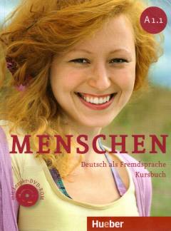

MANemis tilini o'rganuvchilar uchun mo'ljallangan boshlang'ich darajadagi (A1.1) darslik.
Ushbu kitob nemis tilini o'rganuvchilar uchun mo'ljallangan boshlang'ich darajadagi (A1.1) darslikdir. Unda kundalik hayot, oila, kasb va shaxsiy qiziqishlar kabi mavzular qamrab olingan bo'lib, tinglash, gapirish va yozish ko'nikmalarini rivojlantirishga qaratilgan.